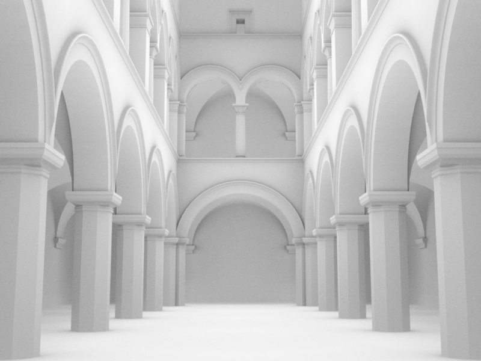
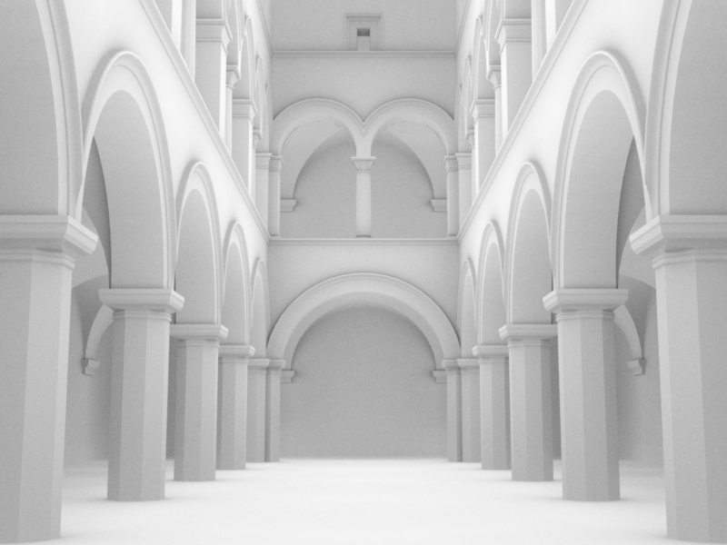
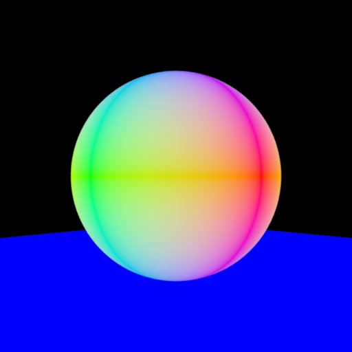
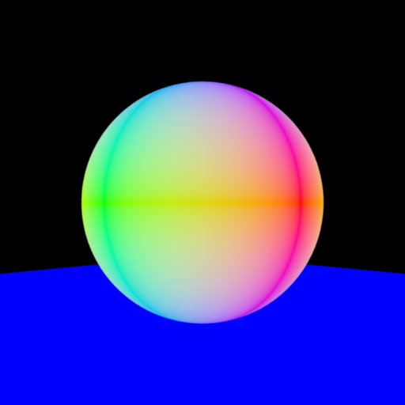
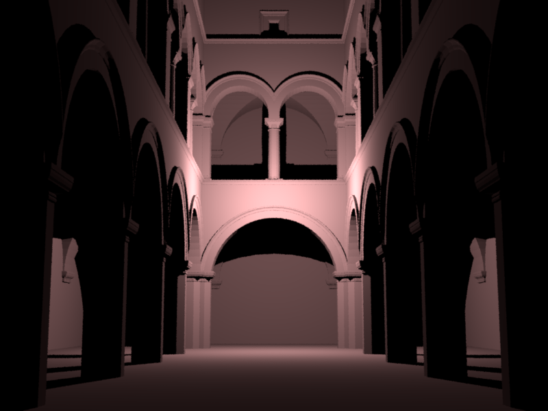
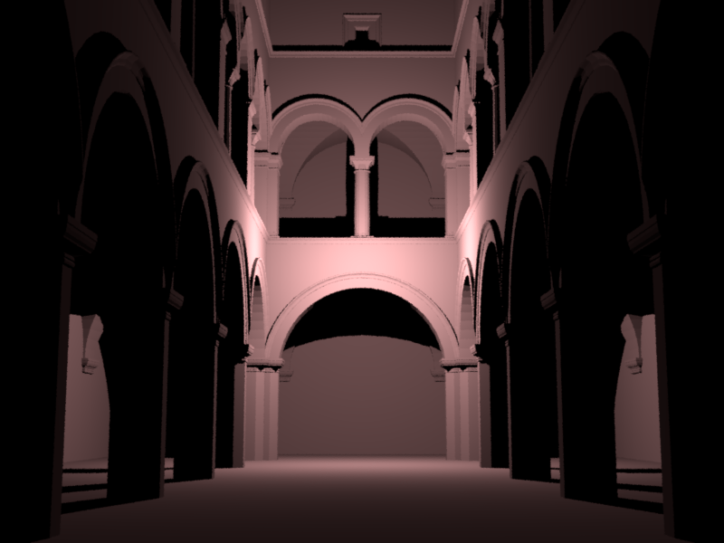
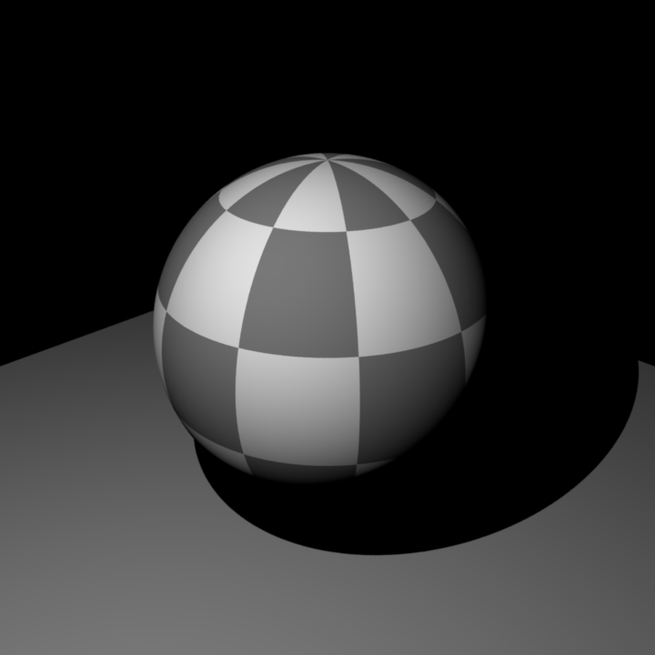
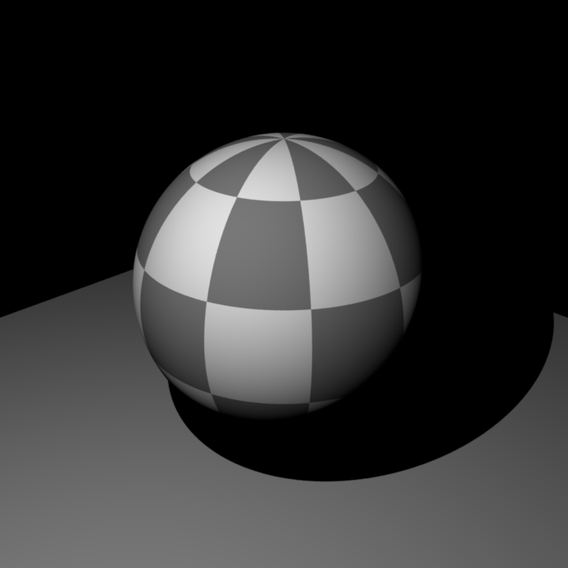
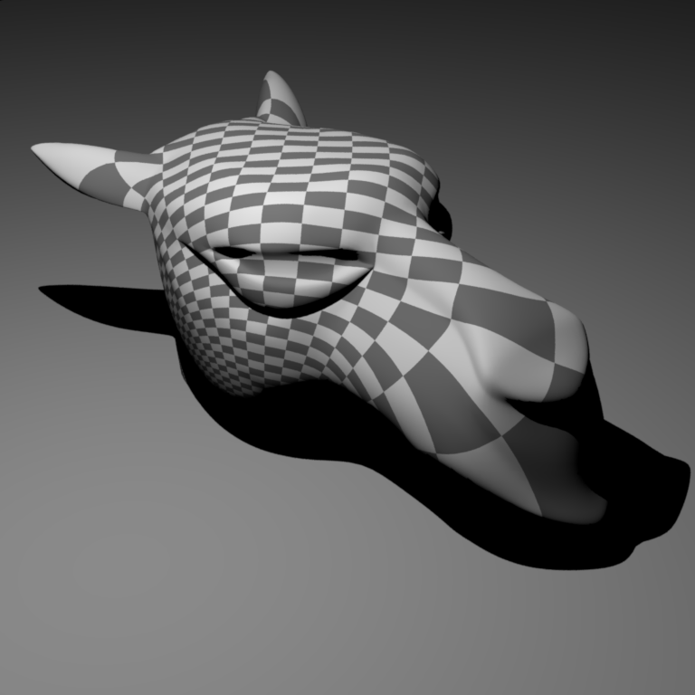
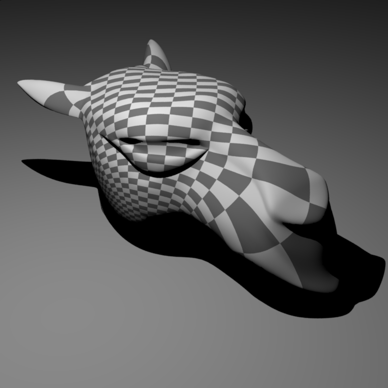

Part 1: Preliminaries
After following the instructions, I successfully rendered ajax-normals. This task took me one day.
Shading Normal Comparison


Part 2: Average Visiblity Integrator
To implement AV Integrator, I found the first intersection point. Then I used its normal and the provided sampler to sample a new vector from the hemisphere. After that I constructed a second ray using the intersection point and the sampled vector and found the second intersection. White is returned if any of the two rays does not have an intersection, black otherwise. The rendering process took quite a while (about 5-10 min), but in the end I managed to render both ajax-av and sponza-av. I also passed the test in test-av. At first my image is darker than the reference image. This is because some of the ray will go below (due to calculation rounding error) the surface and the second ray will be blocked by the surface. Setting an Epsilon as second ray's mint addresses the problem. This task took me one day.
AV Comparison


 

Part 3: Analytic Sphere Shape
To check ray intersection, I combined the analytic equations for sphere and ray to form a quadratic equation. It's worth noting that using dot products is much more convenient than extracting x,y,z values separately and perform algebraic works. I first check that the discriminant is non-negative, then considered the three separate cases shown in lecture slides. For the method setHitInformation(), the direction of the normal should be pointing away from the center. In addition, the normal vector should be normalized (otherwise the resulting sphere will be brighter). As a result, I can render both sphere-analytics and sphere-mesh. This task took me one day.
Sphere Analytic vs Mesh Comparison
 


Part 4: Direct Illumination Integrator
For pointlight.cpp, I set the value for source position, incoming direction and shadowRay in the method sample(). I used the method eval() to calculate the radiance. The formula is given by power/4*pi*r*r, where r is the distance between the pointlight and the first intersection point. The method pdf() is not relevant for this task, so I just returned 1.0. For direct.cpp, I first generate a EmitterQueryRecord only using the point of intersection. Then I set the reverse direction of the ray as the outgoing direction as I am tracing from the perspective of eyes. After that I iterated through all pointlights generated in the scene, computing its radiance, followed by generating a BSDF record and calculating the bsdf value. The cosine value is calculated using the dot product of normalized intersection normals and incoming ray. The color is updated after each iteration of pointlight. In the end, I successfully rendered sponza-direct and also passed both test (test-direct & test-sponza). This task took me three days.
DI Comparison
 

Part 5: Texture Mapping
Firstly, I scaled the uv coordinate to the range [0,1]. To achieve this, I divided the value of u by 2*pi and divided the value of (v-pi) by pi. Next, I divided the scaled uv coordinate by m_scale and added the value of m_delta. Then I rounded up the values to the nearest integer. Finally, I set the color to be white if the x-y coordinate has the same parity, black otherwise. My implementation was able to render mesh-texture correctly, but not sphere-texture. I found out that the issue was in my implementation of sphere.cpp, that I failed to consider the intersection cases comprehensively. After fixing the problem in sphere.cpp, I managed to render sphere-texture. This task took me two days.
Checkerboard Comparison
 

 
